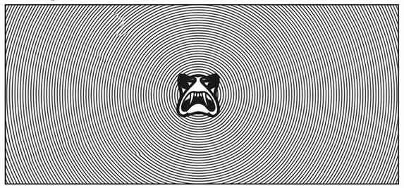

幻象群 · Phantasmagoria
幻术师预设一种特殊动作作为触发条件，发动特别形式的幽灵之力。幻象通常包含完整的视觉、声音、气味和触觉，内容涉及坠落、滑行或高速运动。它可以让目标以为自己正在如此运动，也可令他们相信别的事物正在逼近。触发动作例如跌进陷坑、到达某地中央、打开一扇门等。
目标随后可能以为自己又坠落几十尺、地面裂开而自己无助地滑入未知处，或新打开的门后有水墙奔涌而来。与程序幻象不同，此术的内容必须包含某物坠落或奔涌，或视野中的透视景象不断缩小。

幻术师预设一种特殊动作作为触发条件，发动特别形式的幽灵之力。幻象通常包含完整的视觉、声音、气味和触觉，内容涉及坠落、滑行或高速运动。它可以让目标以为自己正在如此运动，也可令他们相信别的事物正在逼近。触发动作例如跌进陷坑、到达某地中央、打开一扇门等。
目标随后可能以为自己又坠落几十尺、地面裂开而自己无助地滑入未知处，或新打开的门后有水墙奔涌而来。与程序幻象不同，此术的内容必须包含某物坠落或奔涌，或视野中的透视景象不断缩小。
